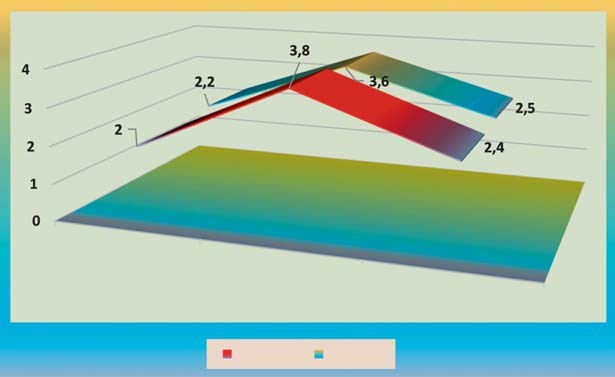
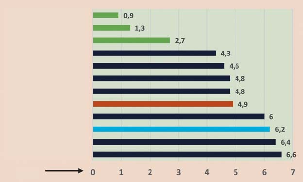
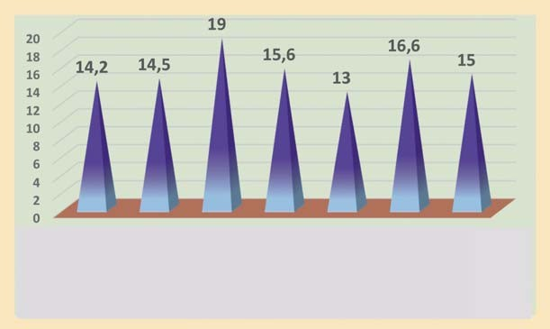
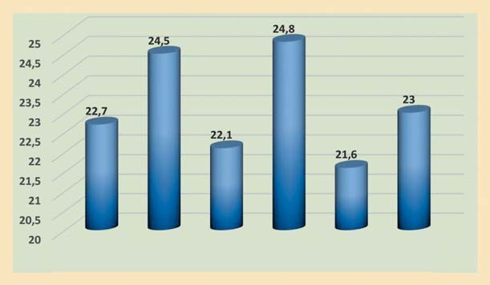
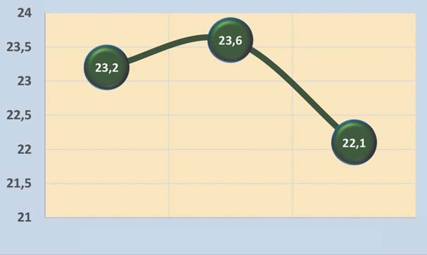
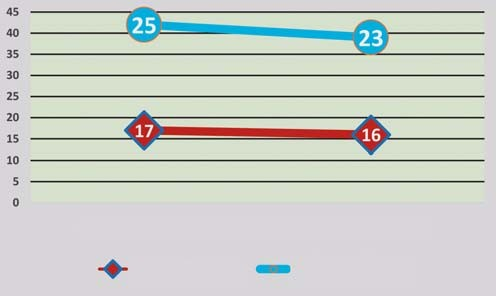
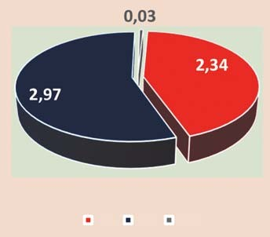
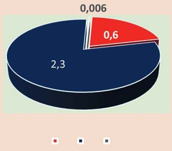
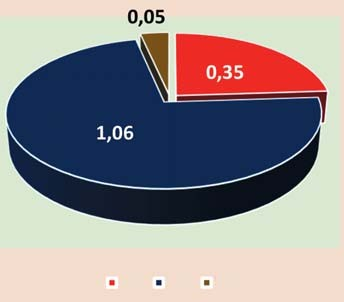

Профілактика · журнал «ДентАрт» 2018 №4
Стоматологія Білорусі і України: перспективи досягнення європейського рівня
DENTISTRY IN BELARUS AND UKRAINE: PERSPECTIVES OF ACHIEVEMENTS OF THE EUROPEAN LEVEL
Петро Леус,Республіканська клінічна стоматологічна поліклініка, друга кафедра терапевтичної стоматології Білоруського державного медичного університету, експерт ВООЗ зі стоматології (м. Мінськ, Білорусь)
Стоматологічне здоров'я населення – найважливіша складова загального здоров'я, а від якості стоматологічної допомоги залежить фізичне, соціальне і психологічне благополуччя людини.
На жаль, основні хвороби зубів і періодонту* – карієс і хронічні періодонтити* – за останні два-три століття не тільки не подолані, але наростають, захоплюючи навіть групи населення, де такі захворювання раніше були невідомі.
Багато вчених вважають, що пандемія карієсу зубів – наслідок цивілізації, особливо у взаємозв'язку з фактором харчування. Зміни консистенції, складу, ступеня переробки харчових продуктів негативно впливають на функцію зубощелепної системи. З'являються умови, що сприяють активізації відомих у карієсології і періодонтології патогенних механізмів. Що робити? Ідея повернення до первісного існування підтримується лише окремими екстремалами, але про зміну їхнього стоматологічного статусу на краще інформації недостатньо. Запобігти карієсу і хворобам періодонту в сучасних як багатих цивілізованих, так і в бідних країнах, що розвиваються, поки що неможливо. Вихід один – максимально зменшувати інтенсивність хвороб і лікувати їх доступними методами.
Лікувально-профілактична стоматологічна допомога населенню країни здійснюється в рамках певної системи охорони здоров'я. У світі відомі три варіанти системи: суспільна (державна), приватна і змішана. Суть цих систем усім зрозуміла. Набагато важче зрозуміти, яка з них ліпша для здоров'я населення. Старше покоління людей в наших країнах добре пам'ятає державну систему охорони здоров'я за радянських часів, і багато хто вважає її кращою за будь-яку іншу. Справді, можна було постояти в поліклініці в черзі і отримати «безкоштовно» необхідну стоматологічну допомогу. Очевидна перевага у порівнянні з тим, коли за візит до стоматолога треба платити при мінімальній зарплаті або пенсії. І не тільки люди похилого віку згадують «рай» у стоматології в ХХ столітті. У документах Всесвітньої організації охорони здоров'я державна система стоматологічної допомоги населенню також вважалася оптимальною для профілактики і своєчасного лікування виниклих хвороб. Однак ВООЗ рекомендує оцінювати не систему, а результат. З результатом у радянські часи були проблеми.
За останні 20-25 років у Білорусі меншою мірою, в інших пострадянських країнах – більшою колишня державна система стоматологічної допомоги населенню поступово змінюється у бік змішаної.6 Тут доречно зауважити, що згідно з рекомендаціями ВООЗ, за будь-якої системи стоматологічної допомоги повинні бути профілактика, систематична лікувально-профілактична допомога дітям, лікування дорослих за зверненнями, адекватне кадрове і фінансове забезпечення та моніторинг стоматологічного здоров'я із застосуванням загальноприйнятих міжнародно визнаних критеріїв.17
Таким чином, у «минулому» державна система стоматологічної допомоги була ідеальною, але не дала бажаних результатів поліпшення стоматологічного здоров'я; в «теперішньому» – спостерігається поступова трансформація системи, як у всьому світі; у «перспективі» – приватна система, очевидно, буде переважати, але вона ще не «налаштована» на позитивні кінцеві результати.
Профілактика
У Республіці Білорусь та Україні на державному рівні реалізуються програми первинної профілактики основних стоматологічних захворювань.4,7 В інших пострадянських країнах також є програми профілактики, але вони обмежені окремими регіонами, здійснюються в межах наукових програм університетів, провадяться у формі тестування засобів профілактики при підтримці виробників цих засобів.1,5 Профілактика карієсу почалася в 1940-х роках після відкриття американським вченим H.T. Dean (1938) користі фтору для зубів. З деяким запізненням в СРСР у 1960-х роках було запущено програму фторування питної води, завдяки якій в ряді місцевостей (Ленінград, окремі райони Москви) інтенсивність карієсу у дітей зменшилася з високого до середнього рівня. Білорусі та України ця програма не торкнулася, і доки йшли дискусії про вартість і користь методу, фторування питної води в СРСР згорнули. Виявилося – дорого, клопітно і не вирішує проблем карієсу в місцевостях, де немає централізованого водопостачання.
Замість невдалої системної профілактики карієсу в СРСР 1988 року спільним наказом Міністерства охорони здоров'я та Комітету освіти була затверджена «Комплексна програма профілактики стоматологічних захворювань», яка базувалася на локальному застосуванні фторидів і вихованні здорових звичок. Схема цієї програми розроблена кафедрою профілактики стоматологічних захворювань ММСІ у 1986 р. (завідувач – проф. Леус П.А., 1986-1990 рр.) і обговорювалася на різних нарадах зацікавлених фахівців. Базою для створення програми профілактики були матеріали ВООЗівської наради провідних фахівців з профілактики на базі Одеського НДІ стоматології в 1984 р.
У Білорусі, Україні та інших країнах були розроблені аналогічні програми профілактики стоматологічних захворювань. Приклад Білорусі: за 5-6 років дії програми інтенсивність карієсу зубів у дітей шкільного віку зменшилася на 20-30%.7,11
У перебудовні роки захворюваність карієсом знову збільшилася. Оновлені програми профілактики у 1990-2000 роках були спрямовані на подальше зниження захворюваності дітей карієсом. У результаті до 2016-2017 рр. у Білорусі й Україні було відновлено стоматологічне здоров'я (за індексом КПВ зубів) ключової вікової групи дітей 12 років до вихідного рівня 1960-х років (рис. 1). На жаль, радянський стоматологічний консерватизм «великих» учених у виборі методів профілактики не дозволив отримати результати, які можна порівняти з країнами Західної Європи.
Набагато гірше стоматологічне здоров'я дітей дошкільного віку. Як у Білорусі, так і в Україні кількість хворих зубів у маленьких дітей «дивує» європейські норми, хоча ми не єдині в порівнянні з низкою інших країн. На рис. 2 подано найновіші дані наукової стоматологічної літератури, які ілюструють особливості цієї проблеми.
На «перспективу» завдання профілактики стоматологічних захворювань значно ускладнюються. По-перше, існуючі в наших країнах програми вже засвідчили їх недостатню ефективність у поліпшенні стоматологічного здоров'я дітей дошкільного віку. По-друге, у багатьох випадках досягнення в профілактиці карієсу у дітей шкільного віку тримаються на ентузіазмі виконавців. Звідси велика різниця рівнів інтенсивності карієсу в різних місцевостях. По-третє, поки що нічого не зроблено і, відповідно, немає досвіду вторинної і третинної профілактики, особливо серед дорослого населення. По-четверте, коли йдеться про хвороби періодонту, навіть система моніторингу не розроблена належним чином. Отже, в доступному для огляду майбутньому істотного зниження захворюваності дітей карієсом та гінгівітами не буде, а тенденція погіршення стоматологічного статусу дорослого населення і літніх людей збережеться.
Для ілюстрації основних показників стоматологічного статусу дорослого населення та людей похилого віку в Білорусі і обраних країнах світу подаємо дані останніх публікацій у міжнародних виданнях (рис. 3, 4). Слід звернути увагу на вищий рівень каріозної хвороби у високоіндустріалізованих країнах, особливо серед населення літнього віку,12 однак на прикладі Німеччини в останні десятиліття можна спостерігати тенденцію зниження КПВ (рис. 5). На жаль, ми не маємо даних епідеміології карієсу зубів у людей похилого віку в Україні для порівняння зі світовими трендами.

Рис. 1. Динаміка інтенсивності карієсу за індексом КПВ зубів у 12-річних дітей в Білорусі і Україні, 1958-2017 рр. Посилання: Білорусь – Бердиган К.І., 1966; Мельниченко Е.М., 1988; Терехова Т.М., Мельникова Є.І. 2017; Україна – Деньга О.В., 2018.

Рис. 2. Інтенсивність карієсу тимчасових зубів 6-річних дітей (індекс кпв) у Білорусі і Україні у порівнянні з обраними країнами Європи і Середньої Азії. Посилання: 1 – Carta G., 2014; 2 – Чолокова Г.С., 2014; 3 – Горинюк А.В., 2018; 4 – Ордабаєва Ж.О., 2012; 5 – Терехова Т.М., Мельникова Є.І., 2016; 6 – Senakola E., Brinkmane E., 2014; 7 – Янушевич О.О. і співавт., 2014; 8 – Sgan-Cohen H. і співавт., 2014; 9 – Файзієв І.Д. і співавт., 2006; 10 – Marotti M. і співавт., 2008; 11 – Weusmann V. і співавт., 2015; 12 – Klass C. і співавт. 2017.
З усього сказаного випливає, що комунальні програми первинної профілактики карієсу зубів у дітей дошкільного (в країнах Західної Європи) і шкільного віку (в Білорусі, Україні та інших країнах) високоефективні і їх слід широко впроваджувати у рамках державних програм на всіх адміністративних рівнях з адекватною фінансовою підтримкою, маючи на увазі як турботу про здоров'я дітей, так і величезний економічний ефект за рахунок зниження рівня захворюваності.
Однак міжнародний досвід свідчить, що «сьогодні» ліквідувати карієс неможливо, і у всіх країнах, де є програми профілактики і де їх немає, рівні інтенсивності каріозної хвороби у дорослого населення «вирівнюються», а кінцеві результати лікувально-профілактичної допомоги, які видно за відсотком беззубих людей похилого віку, приблизно однакові у всьому світі. Більше того, при порівнянні Білорусі, де організація профілактики, фінансування і технічний рівень стоматологічної допомоги населенню безперечно нижчі, ніж у Німеччині, ми бачимо, що в останній відсоток беззубого населення у віковій групі 65-74 р. більший, і така «картина» спостерігається понад 40-50 років (рис. 6). Таким чином, на наш погляд, перспектива повної ліквідації карієсу зубів у доступному для огляду майбутньому вельми туманна, що зумовлює необхідність удосконалення організації та методів лікування стоматологічних хвороб.

Рис. 3. Інтенсивність карієсу зубів за індексом КПВ у віковій групі 35-44 роки в обраних країнах світу. Посилання: 1 – Матвєєв А.М. і співавт., 2018; 2 – Schiffner U. і співавт., 2009; 3 – Senakola E., 2018; 4 – Синіцина Ф.В. і співавт., 2016; 5 – Бекжанова О.Е. і співавт., 2016; 6 – Vainionpaa R. і співавт., 2016.

Рис. 4. Середній КПВ зубів населення у віці 65-74 роки в обраних країнах світу. Посилання: 1 – Матвєєв А.М. і співавт., 2018; 2 – Janssens B. і співавт. 2017; 3 – Draeger S. і співавт., 2013; 4 – Senakola E., 2018; 5 – Urzua L. і співавт., 2009; 6 – Hanindriyo L. і співавт., 2018.

Рис. 5. Ретроспективні дані інтенсивності карієсу зубів за індексом КПВ у віковій групі 65-74 роки населення Німеччини, 1983-2013 рр. (Draeger S. і співавт., 2013).
Систематична стоматологічна допомога дітям
Вона повинна бути доступною, безкоштовною і якісною, як рекомендує ВООЗ. У більшості країн так і є, причому, незалежно від системи охорони здоров'я, турботу про стоматологічне здоров'я дітей бере на себе держава. У минулому в СРСР так звана планова санація дітей була одним із предметів гордості. Про кінцеві результати санації (стоматологічний статус дітей 17-18 років) мало що було відомо, за винятком даних епідеміології 1990-х років, де не дорахувалися в зубних рядах підлітків як мінімум одного зуба. Такий «успіх» санації ВООЗ вважає неприпустимим.
У Білорусі планова санація школярів збереглася й донині. Система забезпечує одні з найкращих в СНД показники стоматологічного статусу за такими критеріями, як відсоток запломбованих зубів і кількість вилучених постійних зубів у формулі КПВ 15-річних підлітків (рис. 7).
Однак «санація» базується на лікуванні, і вона в принципі не може зупинити збільшення кількості нових каріозних порожнин і втрачених пломб. На це витрачаються величезні кошти. Дитячий стоматолог, не розгинаючись, виконує план пломбування. У «майбутньому» нинішня система санації безперспективна. Вона вже розвалилася в більшості країн СНД. Чи є альтернатива? Є. Рекомендації ВООЗ і досвід багатьох індустріалізованих країн засвідчують, що система дитячої стоматології повинна базуватися головним чином на первинній профілактиці, яку, в разі потреби, доповнює раннє лікування. Це дозволяє зменшити ускладнення карієсу до рівня окремих випадків, а видалення постійних зубів у дітей до 18 років звести до нуля. Зрозуміло, істотно знижується вартість системи, і вона стає посильною державі. Зовсім не обов'язково в кожній, навіть великій, школі мати стоматологічний кабінет і зубного лікаря, який щорічно «санує» один і той же зуб так ретельно, що кожен другий випускник школи все ж його втрачає (!!!).
У перспективі в наших країнах будуть відкриті дитячі стоматологічні центри із сучасним обладнанням на базі школи або установи охорони здоров'я (УОЗ) у кожному мікрорайоні. Головним завданням такого центру буде не відсоток санації, а відсоток здорових дітей, включаючи дошкільнят.13 Випадки карієсу будуть рідкістю, а ускладнення відійдуть у минуле. Лікарський персонал буде доповнений зубними гігієністами, як це практикується в Україні. Нормативи і звітність будуть зведені до двох цифр: кількість обслуговуваних дітей і кількість здорових.

Рис. 6. Динаміка відсотка беззубого населення вікової групи 65-74 роки в Білорусі8, 9 і Німеччині16 за останні десятиліття.



Рис. 7. Порівняльні дані компонентів КПВ зубів («К» – карієс; «П» – пломба; «В» – видалений) у Києві,10 Мінську3 і Берліні.15
Стоматологічна допомога за зверненням
Цей вид послуги зазвичай надається дорослому населенню. На відміну від систематичної стоматологічної допомоги дітям, лікування за зверненням передбачає візит пацієнта до стоматолога за власним бажанням для профілактичного огляду або у випадках зубного болю чи інших проблем у щелепно-лицьовій ділянці. При цьому стоматологічна установа має розташовуватися не дуже далеко від місця мешкання пацієнта, в ній повинні бути відповідні фахівці, матеріали та обладнання, лікування має бути найвищих стандартів на засадах доказової стоматології в даний час. Зазначені параметри частково характеризують «доступність» стоматологічної допомоги населенню.
У «минулому», в СРСР, доступне і «безкоштовне» лікування зубних хвороб було предметом гордості системи – у порівнянні з іншими країнами, де стоматологія для дорослих була в основному платною і через це далеко не всім доступною. «Сьогодні» в Білорусі у пацієнта «безкоштовному» лікуванню є альтернатива – отримання платних послуг у державних і приватних стоматологічних УОЗ. Перевагу останнім надають близько 7.2% пацієнтів. Десять років тому, у 2007 році, на платний прийом звернулися лише 3972 пацієнти, або 0.03% від загального числа відвідувань. Таким чином, динаміка вибору повільно, але стійко схиляється в бік прямої оплати за послугу. Чіткого науково обґрунтованого пояснення цієї трансформації у нас поки що немає. Але можна припускати, що радянська оцінка «доступності» стоматологічної допомоги населенню, концентруючись на «безкоштовному лікуванні», не враховувала двох з трьох найважливіших складових доступності (за ВООЗ). Ідеться про «використання» і «якість». «Використання» – це відсоток населення від загальної кількості жителів, що мешкають у районі обслуговування, які звернулися до стоматолога первинно в поточному році. У системі звітності УОЗ є така статистика, але вона не «прив'язана» до кількості населення, і щорічно вираховуваний відсоток первинних від усіх відвідувань не вказує на реальне «використання» стоматологічної допомоги населенням. Згідно з рекомендаціями ВООЗ, цей показник повинен бути на рівні 60% і більше. Для дитячого населення систематична стоматологічна допомога (планова санація) повинна охоплювати 100% дітей. У світлі сказаного, пацієнт, який одного разу відвідав приватного лікаря, можливо, отримає усне або навіть письмове запрошення з'явитися на прийом у наступному році. Раніше таку співпрацю з пацієнтами називали диспансеризацією, але вона стосувалася тільки хворих, що жодним чином не зберігало здоров'я здорових людей.
Інша «забута» складова «доступності» – якість – більш складна, багатокомпонентна і нерідко дискусійна тема. На комунальному рівні критерії якості стоматологічної допомоги досить добре розроблені на основі рекомендацій ВООЗ. Для конкретного індивідуума важливо, щоб процедура була безболісною, без ускладнень, пломба була міцною, красивою, довговічною і т.п. Усе це залежить від професіоналізму лікаря, адекватного обладнання, часу, відведеного на прийом, готовності пацієнта оплатити нерідко дорогі стоматологічні матеріали. Багато пацієнтів вірять, що платна послуга буде якіснішою у порівнянні з безкоштовною. Це один з факторів трансформації вибору. Але є дуже важливий індикатор якості стоматологічної допомоги (за ВООЗ), який, по ідеї, повинен працювати ефективніше в суспільній, аніж приватній системі. Це – «причина звернення» до стоматолога і «структура діагнозів» первинних пацієнтів. Найважливіший критерій функціонування системи високої якості – приблизно 50% звернень в стоматологічну УОЗ повинні бути з приводу профілактичного огляду і для отримання рекомендацій щодо профілактики стоматологічних хвороб. У Білорусі в 2016 р. таких звернень було 18.7%. Це задовільний показник, якщо порівняти його з даними в минулому столітті. У приватних УОЗ такої статистики немає, але за окремими публікаціями можна спостерігати шанобливе ставлення до профілактики: 26% пацієнтів від загальної кількості тих, що звернулися на прийом, були проведені профілактичні процедури.2
Поки що незрозуміло, чи поліпшить система платної стоматології, яка розвивається, головний показник якості – запобігання хворобам і раннє їх лікування, тому що приватна практика особливо стурбована виживанням в умовах контрольованої вартості послуг, що надаються. Напевно, в перспективі державний сектор галузі буде цілеспрямованіше вдосконалювати доступність стоматологічної допомоги (структура, використання, якість), а УОЗ недержавної власності зможуть ширше надавати бажаючим пацієнтам послуги найкращих світових стандартів.
Кадрове забезпечення і фінансування стоматології
У минулому і, до певної міри, нині ці два складні питання вирішувалися шляхом планування «згори». Результати централізованого планування і забезпечення галузі добре відомі: нерівномірний розподіл лікарів-стоматологів та хронічний дефіцит грошей у всіх державних стоматологічних УОЗ. Це негативно позначається на доступності стоматологічної допомоги, особливо за критеріями «використання» і «якість».
Зазначені проблеми існують у всіх країнах, але вони вирішуються шляхом альтернативних підходів, в тому числі з використанням рекомендацій ВООЗ. Експерти ВООЗ рекомендують починати процес планування персоналу і бюджету із ситуаційного аналізу, який включає оцінку стоматологічного статусу населення, наявності інфраструктури, кількості і видів персоналу, економічних можливостей країни. На первинному рівні, наприклад в якомусь агромістечку, не Міністерство охорони здоров'я, а місцева влада повинна вирішувати, яким чином забезпечити гарне стоматологічне здоров'я місцевим мешканцям, дітям передусім. Влада, зі схвалення громади, розглядає варіанти «придбання» зубного лікаря, стоматолога, к.м.н. і так далі для комфортної результативної роботи в містечку. Можливо, буде розглянута альтернатива – надання мешканцям селища транспортного сполучення до найближчих стоматологічних УОЗ. Реформа охорони здоров'я в Україні, видається, спрямована на використання міжнародного досвіду з цих питань. З держбюджету слід очікувати фінансування профілактики і лікування дітей; інше – місцевий бюджет і кошти пацієнтів, які повинні бути мотивовані до щорічних профілактичних оглядів та раннього лікування хвороб зубів. Так значно дешевше і краще для здоров'я людей.
Державні програми у стоматології повинні забезпечити первинну профілактику основних стоматологічних захворювань, систематичне стоматологічне лікування дітей до 14-18 років і пільгові умови лікування певних соціальних груп населення. При цьому перелік послуг може бути обмежений виділеним фінансуванням, при дотриманні науково-обґрунтованих протоколів лікування.
Для дорослого матеріально забезпеченого населення так зване безкоштовне стоматологічне лікування неможливе у зв'язку з його високою вартістю. При платному лікуванні у пацієнтів «спрацьовують» економічні важелі до здорового способу життя (наприклад, регулярне чищення зубів), профілактичних оглядів у стоматолога, раннього лікування виниклих хвороб. Ці важелі активно підтримуються страховими компаніями в багатьох країнах, наприклад, безкоштовний огляд, повна компенсація вартості планового лікування, але відмова оплати лікування у випадках, якщо призначення лікаря було проігнороване.
Про страхову стоматологію
Спроби були, але ще в жодній пострадянській країні сповна ця система не прийнята. Ентузіасти системи елементарно не цікавляться, скільки коштує довговічна пломба, пломбування кореневого каналу зуба, протез на імплантатах і скільки грошей може внести звичайний громадянин у страхову касу. Населення має знати, що страхування стоматологічного здоров'я – це оплата послуг через посередника. Сьогодні для нас таким посередником є держава, грошей на «безкоштовне» лікування не вистачає. Те ж саме буде, якщо частину нашої зарплати ми віддамо страховикові. Автомобілісти знають, що страховка КАСКО дуже надійна, але далеко не всі можуть нею скористатися. Також ми знаємо, що в Німеччині та інших країнах високого економічного рівня страховки оплачують навіть дороге зубопротезування. Але не треба думати, що це безкоштовно. У доступному для огляду майбутньому у нас загальної страхової стоматології не передбачається, але вже є і будуть розвиватися локальні схеми на багатих приватних і державних підприємствах, які частину великої зарплати своїх службовців резервують для повної або часткової оплати певних, узгоджених з УОЗ, лікувально-профілактичних стоматологічних заходів співробітникам і членам їх сімей. Це дуже прогресивний напрямок, який може сприяти профілактиці, ранньому лікуванню і практичній реалізації стандартів лікування високого рівня.
Щоб реалізувати частину згаданого вище, потрібні кадри високої кваліфікації. Сьогодні лікар-стоматолог у багатьох випадках на практиці виконує функцію зубного лікаря із середньою освітою. У найближчому майбутньому потрібно організувати робочі місця, де випускники стоматологічних факультетів Білорусі та України зможуть працювати у відповідності з їхньою кваліфікаційною характеристикою лікаря-стоматолога широкого профілю (загальної практики). Що ж до рівня професійної підготовки стоматологів, він повинен відповідати міжнародним стандартам, і це цілком можливо, якщо прискорити багаторічний перехід на так звану Болонську систему. У ній немає нічого особливого, якщо не брати до уваги, що принцип «вчити» кращий, ніж «учитися».
Моніторинг
Якщо не оцінювати систему, як вона працює, то кінцевий результат буде непередбачуваним. ВООЗ рекомендує, що постійний моніторинг роботи системи стоматологічної допомоги населенню є таким самим важливим компонентом, як і всі інші: структура, кадри, фінансування і т.п.18 У пострадянських країнах частково, у Білорусі майже повністю збереглася обліково-звітна система моніторингу стоматології зразка 1960-х років. Система базується на статистичних даних про кількість стоматологічних УОЗ, кількість персоналу, кількість відвідувань, пломб і т.п. Звичайно, все це дуже важливо. Однак на світовому рівні, відповідно до інформаційної системи ВООЗ, далеко не на першому місці стоять питання, скільки в країні персоналу, поліклінік і відвідувань. Прагнення їх збільшити вже не вважається досягненням. Головне – рівень стоматологічного здоров'я населення.
З 2010 року в Білорусі до звітної системи МОЗ включено кілька європейських індикаторів стоматологічного здоров'я: % здорових дітей, КПВ зубів, рівень гігієни рота. Однак ще не використовується низка важливих показників якості стоматологічної допомоги населенню. Очікується, що в найближчі роки моніторинг стоматологічного здоров'я населення Білорусі, крім згаданих вище двох показників, буде також включати:
- пропорцію нелікованого карієсу зубів у дітей (оцінюється якість планової санації);
- кількість видалених постійних зубів на 1000 дітей до 18 років (оцінюється якість лікування карієсу зубів і його ускладнень);
- кількість збережених природних функціонуючих зубів у дорослих людей (оцінюється якість усіх видів лікувально-профілактичної роботи;
- відсоток населення з повною втратою зубів (оцінюється в цілому якість системи стоматологічної допомоги населенню).
Обмін досвідом на професійному рівні зі стоматології з Україною, безсумнівно, прискорить процес інтеграції критеріїв моніторингу стоматологічного здоров'я в міжнародну систему оцінки якості стоматологічної допомоги населенню.
Висновки
Науковий аналіз існуючих в Білорусі і Україні систем оцінок якості та стандартів стоматологічної допомоги населенню, введених у 1920-1960-х роках, вказує на їх недостатню об'єктивність у зв'язку із застосуванням сучасних нових технологій і методів лікувально-профілактичної стоматологічної допомоги. Дані описової епідеміології карієсу зубів свідчать, що як в Білорусі, так і в Україні ще не використані наявні резерви вдосконалення профілактики основних стоматологічних захворювань у відповідності із загальновизнаними критеріями доказової стоматології. У цій роботі рекомендується ряд основних критеріїв якості, які були запропоновані міжнародною групою експертів, для оптимізації звітної системи у стоматологічних лікувально-профілактичних установах. Практична реалізація нових показників сприятиме подальшому поліпшенню якості стоматологічної допомоги населенню відповідно до міжнародних стандартів. Прогнозується подальше поліпшення стоматологічного здоров'я населення країни за умови оптимізації профілактичної роботи та широкого впровадження в систему охорони здоров'я нових технологій і найкращих світових стандартів у всіх сферах практичної стоматології.
* У цій роботі використовується міжнародна термінологія і класифікація хвороб ICD-DA, WHO 1995.
Література
- Авраамова О.Г., Кулаженко Т.В., Габитова К.Ф. Динамика стоматологической заболеваемости детей в процессе реализации программы профилактики в условиях школьного стоматологического кабинета // Стоматология (РФ). – 2016. – № 2. – С. 34-36.
- Белогуров А.Э. Опыт работы врача-стоматолога общей практики // Стоматологический журнал. – 2016. – Т. XVII, № 2. – С. 140-144.
- Гунько С.И., Леус П.А., Жугина Л.Ф., Ошуркевич А.В., Лях Е.Г., Грибовская И.И. Начальный этап реализации программы профилактики основных стоматологических заболеваний среди детского населения г. Минска // Стоматологический журнал (РБ). – 2017. – T. XVIII. – №4. – С. 321-325.
- Деньга О.В., Скиба А.В. Практическая реализация коммунальных программ профилактики стоматологических заболеваний в Украине // Доклад на конференции по стоматологии, Белорусский государственный медицинский университет, 18 мая 2018 г., Минск.
- Ермуханова Г.Т., Негаметзянов Н.Г., Рысбаева Ж.И. О состоянии стоматологического здоровья детей Республики Казахстан // Материалы международной научно-практической конференции. Омский государственный медицинский университет, 3 Марта 2016 г., Омск (РФ). – 2016. – С. 71-79.
- Леус П.А. Профилактическая коммунальная стоматология. Медицинская книга, Москва, 2008, 444 с.
- Леус П.А. Реализация национальной программы профилактики в Беларуси // Стоматологический журнал. – 2000. – № 1. – С. 44-47.
- Матвеев А.М., Юдина Н.А., Казеко Л.А. и соавт. Результаты эпидемиологического обследования взрослого населения Республики Беларусь, 2017 г. // Стоматологический журнал. – 2018. – Т.19, №2. – С. 82-87.
- Новгородцев Г.А. Заболеваемость городского населения болезнями зубов и полости рта // Труды IV Всесоюзного съезда стоматологов, 8-12 октября 1962 г., Москва. – Медицина. – Москва, 1964. – С. 55-59.
- Хоменко Л.А., Остапко О.И., Сороченко Г.В., Ишутко И.Ф., Илленко Н.О. Европейские индикаторы стоматологического здоровья детей школьного возраста г. Киева // Профілактична Медицина (Украина). – 2016. – № 12 (26). – С. 81-87.
- Терехова Т.Н., Мельникова Е.И. Динамика стоматологического статуса детского населения Республики Беларусь // Современная стоматология. – 2016. – № 2. – С. 52-53.
- Andersson P., Renvert S., Sjorgen P. Dental status in nursing home residents in Sweden // Community Dental Health. – 2017. – V. 34, #4. – P.203-207. DOI:10.1922/CDH_4100Andersson 05.
- Dickson-Swift V., Kenny A., Gussy M. et al. Supervised tooth brushing programs in primary schools and early childhood settings // Community Dental Health. – 2017. – V. 34, #4. – P. 208-225. DOI:10.1922/CDH_4057DicksonSwift18.
- Draeger S., Kettler N., Wehry Ch. Dental prevention in Germany. German Dental Association. BZAK, 2013, 150 р.
- Pieper K., Heinzel-Gutenbrunner M. Caries decline in Germany in the period 2004-2009. 17th Annual Congress of European Association of Dental Public Health, 15-17 November 2012, London, UK, «DeCare Dental», 2012, p. 26.
- Schiffner U., Hoffmann T. et al. Oral health in German children, adolescents, adults and senior citizen in 2005 // Community Dental Health. – 2009. – V. 26. – P. 18-22.
- World Health Organization. Planning of Oral Health Services, WHO OP #53, WHO Geneva, 1980, 49 p.
- World Health Organization. Oral Health Surveys Basic Methods, 5th Ed. – WHO Geneva. – 2013. – 125 p.